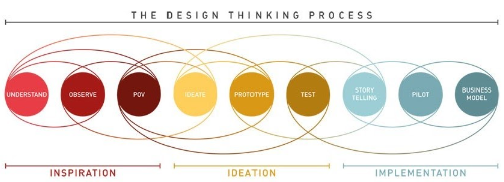

Hva er Design Thinking?
Design Thinking er en empatidrevet prosess hvor målet er å skape bedre brukeropplevelser rundt produkt-og tjenesteutvikling,
ved å sette brukeren i sentrum. Èn av flere definisjoner er Lockwood (2010) sin definisjon:
"Design thinking er en menneskelig innovasjonsprosess som legger vekt på observasjon, samarbeid, rask læring, visualisering
av idees og rask prototyping, basert på virksomhetens analyser"

Design Thinking handler ikke bare om grafisk design, men kan sees på som et rammeverk som hjelper oss å forstå hele prosessen fra idè til implementering. Noe av det som skiller design thinking fra andre metoder innenfor problemløsning, er at du bruker mer tid på å utforske problemet og setter brukeren i fokus.
Hvorfor Design Thinking?
- Sikrer en brukersentrert prosess med fokus på problemet. I Design Thinking er det høyt fokus på brukerperspektivet og deres behov for løsninger. Dermed sikrer vi at det ferdige produktet løser de største utfordringene som brukerne reelt har.
- Utforsker flere løsningsalternativer. Før vi tar fatt på den tekniske utviklingen, får vi mulighet til å utforske flere forskjellige løsninger. På denne måten åpner vi øynene for muligheter som vi kanskje ikke hadde identifisert med en klassisk tilnærming. Dette gir oss tid til å være kreative basert på utfordringene, samtidig som det gir oss mulighet til å avvise løsninger som ikke fungerer eller tilfredsstiller behovene.
- Vi forstår brukeren. Empati er selve grunnprinsippet i Design Thinking, og krever at vi streber etter å forstå og å identifisere oss med menneskers behov og utfordringer.
- Testing, testing, testing. Filosofien om "design, test og repitisjon" er også sentral i prosessen. Dermed kan vi oppnå gjennombrudd tidlig i prosessen ved å lage flere raske prototyper og få raske tilbakemeldinger fra faktiske brukere, før man bruker for mye tid eller penger på en ide.